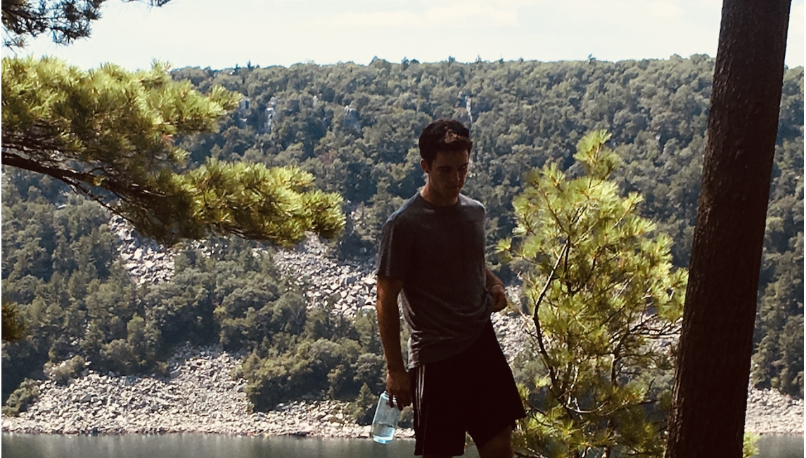

1 /4

Current UW-Madison Student in Computer Science and Physics, graduating in May 2021.
2 /4
Looking to build on knowledge of machine learning network and the process of building accurate models.
Interested in applying network models to large physics datasets such as condensed matter data with the goal of identifying trends in physical properties.
3 /4
Hobbies include practicing piano, playing sports such as basketball, and physical fitness.
4 /4

In general, I appreciate doing things that push me in all areas of my life. I believe in taking on challenges amd striving to pursuit difficult objectives.
❮
❯